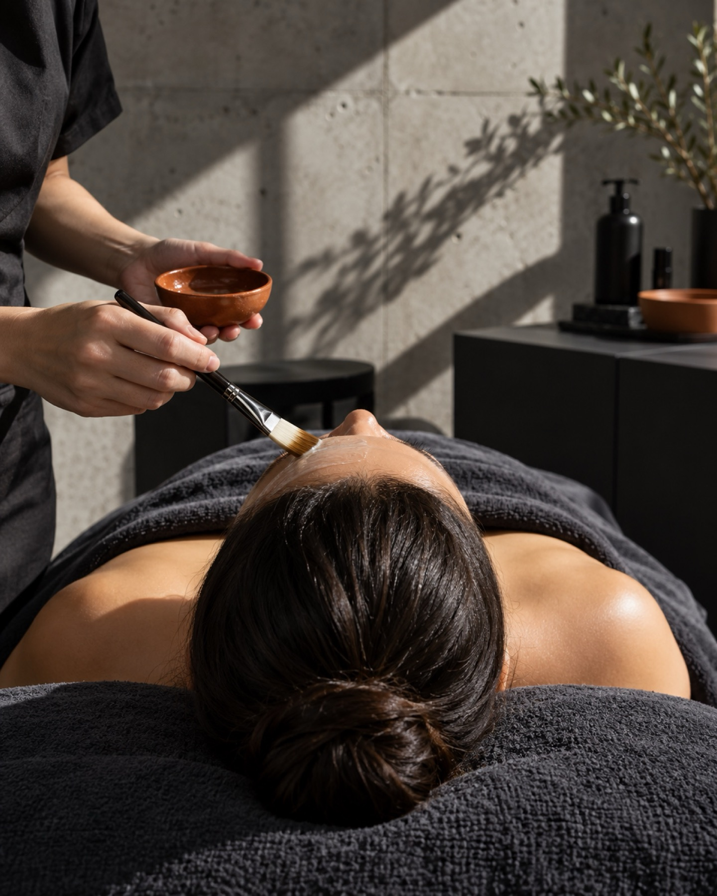
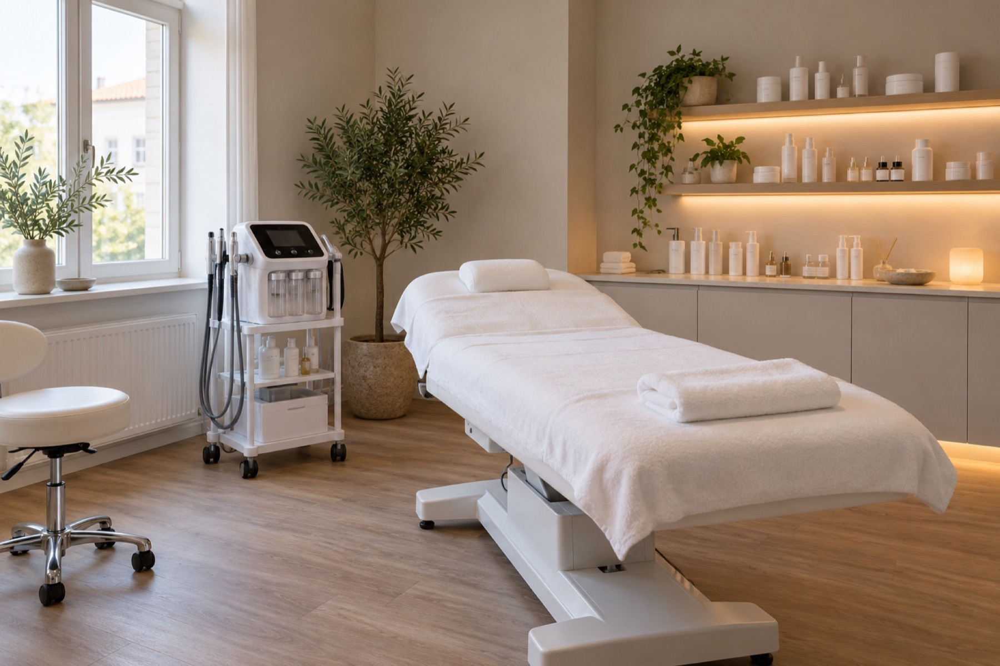
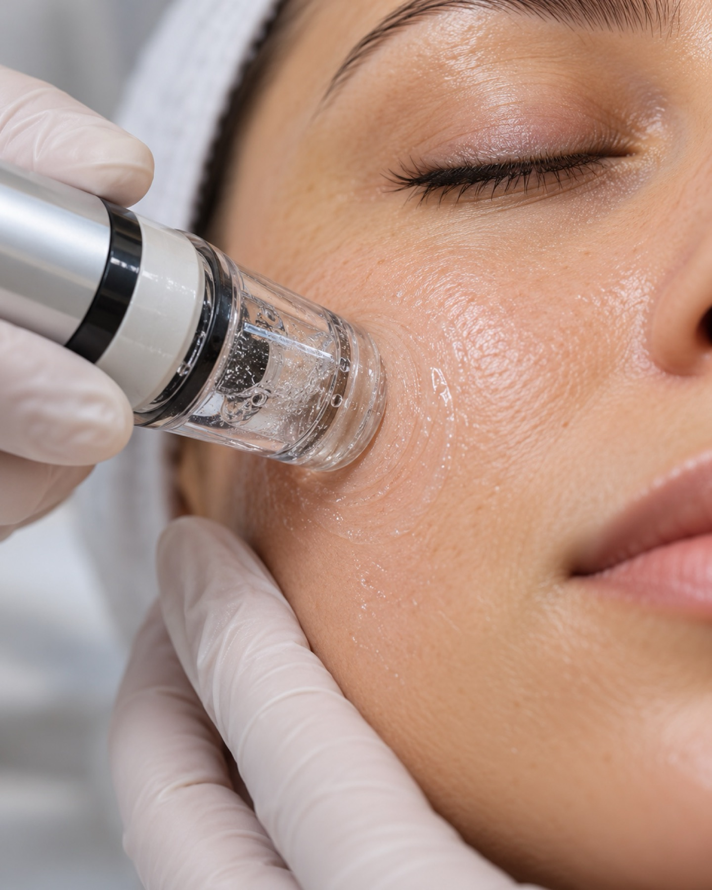
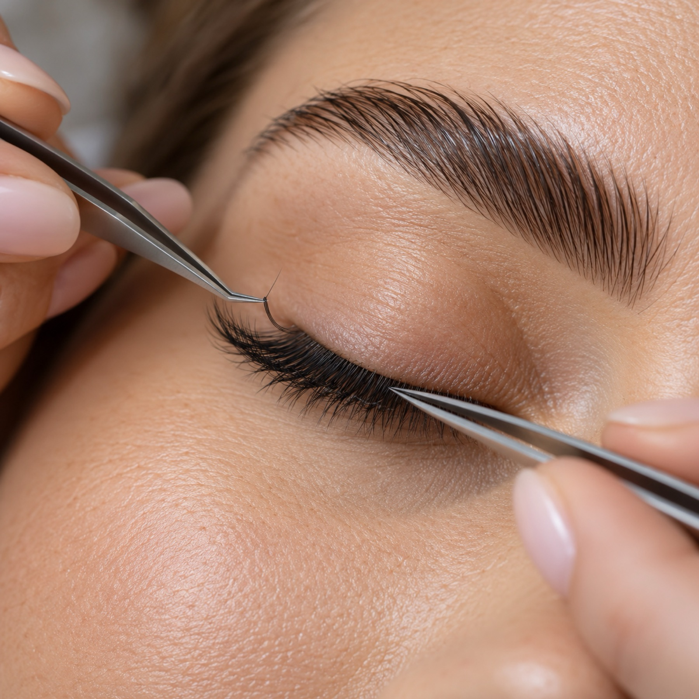
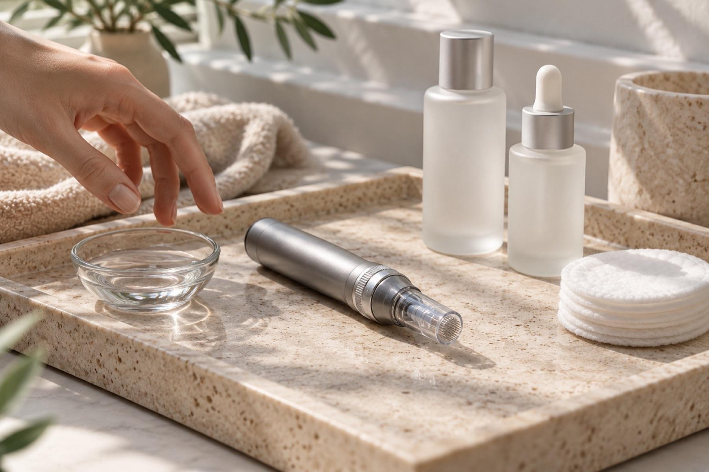

Haut mit Haltung.
Aqua Facial, Microneedling und Brauen in der Hauptstraße 51, Sandhausen.

Was wir machen
01Aqua Facial / HydraFacial
Mehrere Schritte in einer Sitzung: Die Haut wird gereinigt, bekommt Feuchtigkeit und wirkt danach frischer.
02Microneedling
Mit sehr feinen Nadeln setzen wir winzige Reize, auf die die Haut mit eigener Erneuerung antwortet. Gefragt bei Narben, Unebenheiten und feinen Linien.
03Peelings
BioRePeel und Fruchtsäure lösen abgestorbene Hautschüppchen. Das Hautbild wird ebenmäßiger.
04Unreine Haut / Akne
Erst reinigen, dann beruhigen, dann aufbauen. Wir sehen genau hin und wählen Wirkstoffe und Verfahren passend zu Ihrer Haut.
05Anti-Aging
Für ein frischeres, straffer wirkendes Hautbild kombinieren wir je nach Haut Aqua Facial, Peelings oder Microneedling.
06Individuelle Gesichtsbehandlung
Nicht jede Haut braucht dasselbe. Wir stellen die Behandlung so zusammen, wie Ihre Haut und Ihr Anliegen es verlangen.
07Browlifting / Brow Lamination
Die Brauen werden in Form gebracht und fixiert. Sie liegen geordnet, wirken voller, und Sie müssen morgens nicht nachstylen.
08Wimpernverlängerung
Wir verlängern Ihre Wimpern einzeln. Das Ergebnis: ein dichterer Wimpernkranz.
Klare Kante, sanfte Hände
Persönliche Beratung
Bevor wir anfangen, reden wir über Ihre Haut und Ihre Wünsche. Sie wissen jederzeit, was wir tun und warum.
Apparativ und sanft
Geräte, die wir auf Ihre Haut einstellen.
Kleines Studio
Ein Raum, eine Ansprechpartnerin. Kein Zeitdruck.

Hülya und die Lounge
Die Beauty by Hülya Lounge hat am 3. Oktober 2026 in der Hauptstraße 51 in Sandhausen eröffnet. Ein kleines Studio: Gesichtsbehandlungen, apparative Kosmetik, Brauen, Wimpern.
Wir reden erst, in Ruhe. Wir sagen offen, was möglich ist und was nicht, und behandeln dann nach Ihrer Haut.
@hulya.lounge auf InstagramIhr Termin in drei Schritten
Schreiben
Schreiben Sie uns auf WhatsApp oder rufen Sie an. Wir klären kurz, worum es geht, und suchen einen Termin.
Hautgespräch
Im Studio sehen wir uns Ihre Haut zusammen an. Dann sagen wir, welche Behandlung Sinn macht.
Behandlung
Wir behandeln. Für die Tage danach bekommen Sie einen Pflegetipp mit.
Ergebnisse



Weitere Vorher-nachher-Bilder gibt es auf Instagram: @hulya.lounge
Bewertungen
Häufige Fragen
Wie bereite ich mich auf den Termin vor?
Kommen Sie am besten ungeschminkt oder schminken Sie sich vorher nur dezent. Sagen Sie uns bitte, wenn Sie Allergien haben oder aktuell Hautpflege mit starken Wirkstoffen nutzen.
Wie lange dauert eine Behandlung?
Die meisten Gesichtsbehandlungen dauern etwa eine Stunde. Wimpernverlängerungen nehmen mehr Zeit in Anspruch. Die genaue Dauer nennen wir Ihnen bei der Terminvereinbarung.
Was muss ich nach der Behandlung beachten?
Verwenden Sie milde Pflege und täglich Sonnenschutz. Was bei Ihrer Behandlung sonst wichtig ist, erklären wir Ihnen im Studio.
Was gilt, wenn ich einen Termin absagen muss?
Bitte melden Sie sich so früh wie möglich per WhatsApp oder Telefon. Dann können wir den Termin anderweitig vergeben und Ihnen einen neuen anbieten.
Melden Sie sich
+49 176 82257841 Beauty by Hülya LoungeHauptstraße 51
69207 Sandhausen